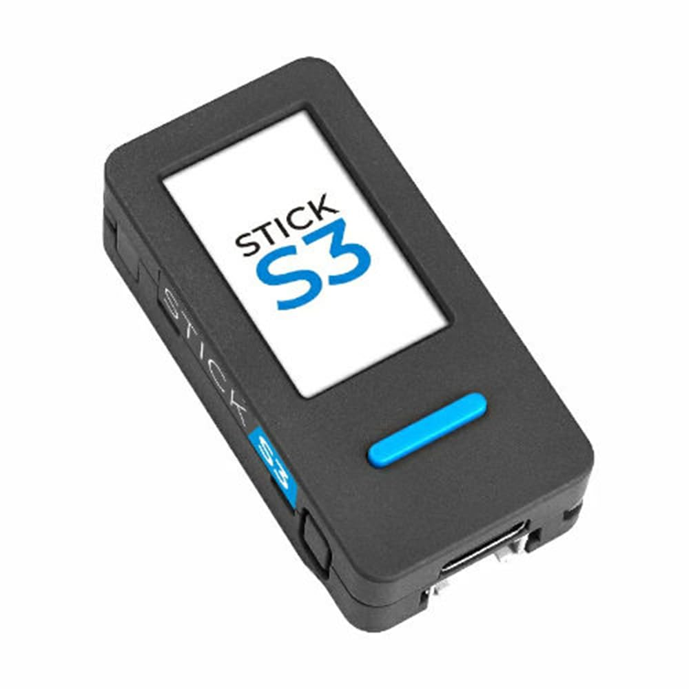

English ・ 日本語
HDZap ファームウェア インストーラー
M5StickS3 にブラウザから直接ファームウェアを書き込めます。
対応デバイス

M5StickS3 のみ。ESP32-S3、USB-C ネイティブ接続。
このブラウザは非対応です
このブラウザは Web Serial API に対応していません。 macOS / Windows 上の Google Chrome、Microsoft Edge、 その他 Chromium 系ブラウザ（Brave、Opera、Vivaldi、Arc など）で開いてください。
インストール
- M5StickS3 を USB-C データケーブルで接続してください（充電専用ケーブルでは認識しません）。
- 本体左側の電源ボタン（小さいボタン）を 2 秒長押しして書き込みモードに入ります。緑色 LED が点滅すれば OK。
- 下のボタンを押し、ブラウザのダイアログで M5StickS3 のシリアルポートを選択してください。
- macOS:
cu.usbmodem... - Windows:
COMx
- macOS:
- 書き込み完了までおよそ 30〜90 秒。完了後は電源ボタンを 1 回押すと HDZap が起動します。
準備中…
0%
書き込み完了！
本体左側の電源ボタンを 1 回押すと HDZap が起動します。
自動再起動に失敗した可能性があります。USB-C ケーブルを一度抜き差しした後、電源ボタンを 1 回押してください。
- 起動後、iOS アプリと BLE でペアリングし、ラップタイムを Digital FPV ゴーグル OSD に送れます。
- ファームを更新したいときは、このページから同じ手順で書き直してください。
エラー
うまくいかないとき
- ポート選択ダイアログに M5StickS3 が出ない。 本体左側の電源ボタンを 2 秒長押しして書き込みモード（緑色 LED 点滅）に入っているか確認してください。それでも出ない場合は別の USB-C データケーブルを試してください。Windows ではドライバが当たるまで数秒待つことがあります。
- 「ブートローダーに接続できませんでした」と表示される。 本体左側の電源ボタンを 2 秒長押しし、緑色 LED の点滅を確認してから「接続して書き込む」を押してください。書き込みモードに入っていないと接続できません。
- 「シリアルポートを開けませんでした」と表示される。 他のアプリ（PlatformIO のシリアルモニタ、Arduino IDE など）が同じポートを使っていないか確認してください。
- ブラウザが接続自体を拒否する。 Chromium 系ブラウザ（Chrome / Edge / Brave / Opera / Vivaldi / Arc）を使い、ページが
https://またはlocalhostで開かれていることを確認してください。 - 書き込み完了後、電源ボタンを押しても起動しない。 電池残量を確認してください。USB-C ケーブルを挿したままで電源ボタンを押すと確実に起動します。